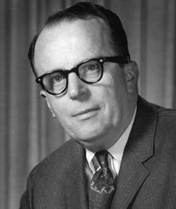
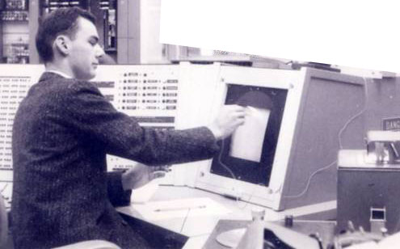
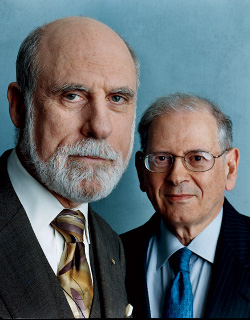

History of the Internet Part Two
Internet in Development
1962: Leonard Kleinrock, a doctoral student attending MIT, develops a thesis describing queuing networks, which ultimately becomes known as “packet switching,” coined by
Donald Davies in 1967.

1962: J.C.R. Licklider becomes the first head of the computer program at ARPA.

1967: ARPAnet Design begins. Larry Roberts leads the design discussion, and publishes first ARPAnet design paper, under the concept of "Multiple Computer Networks and
Intercomputer Communication." (IMPs)
1970: Dr. David Clack begins to implement key internet protocols for the Multics system, the Xerox PARC ALTO and the IBM PC.

1972: Vint Cerf and Robert Kahn lead a small group of developers, and begin developing the TCP/IP protocol.